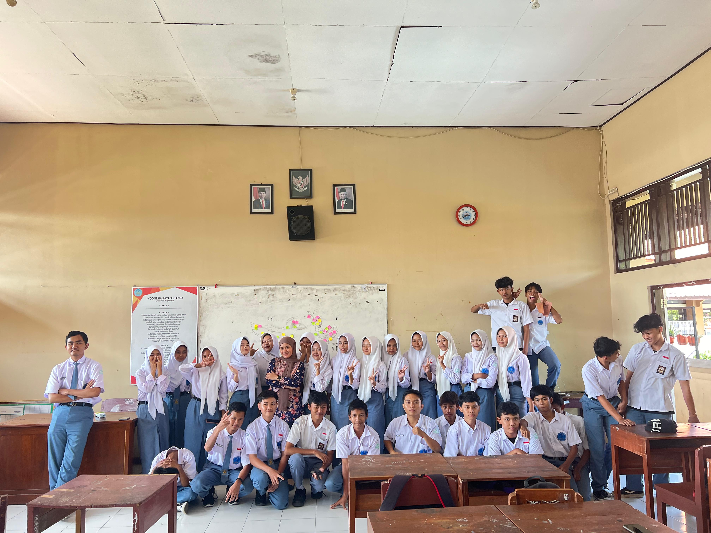
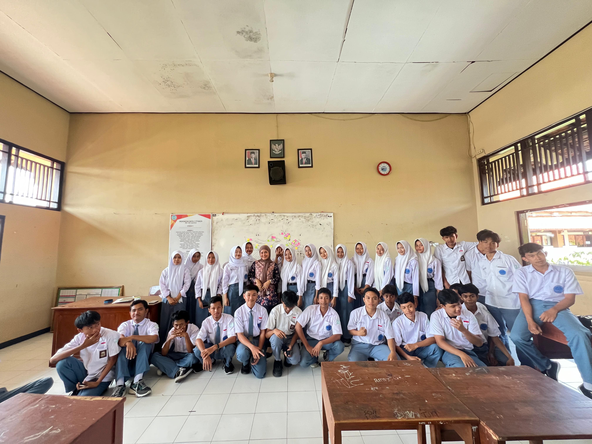
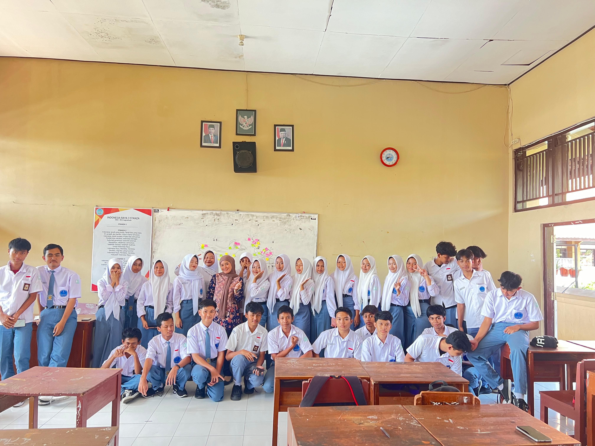
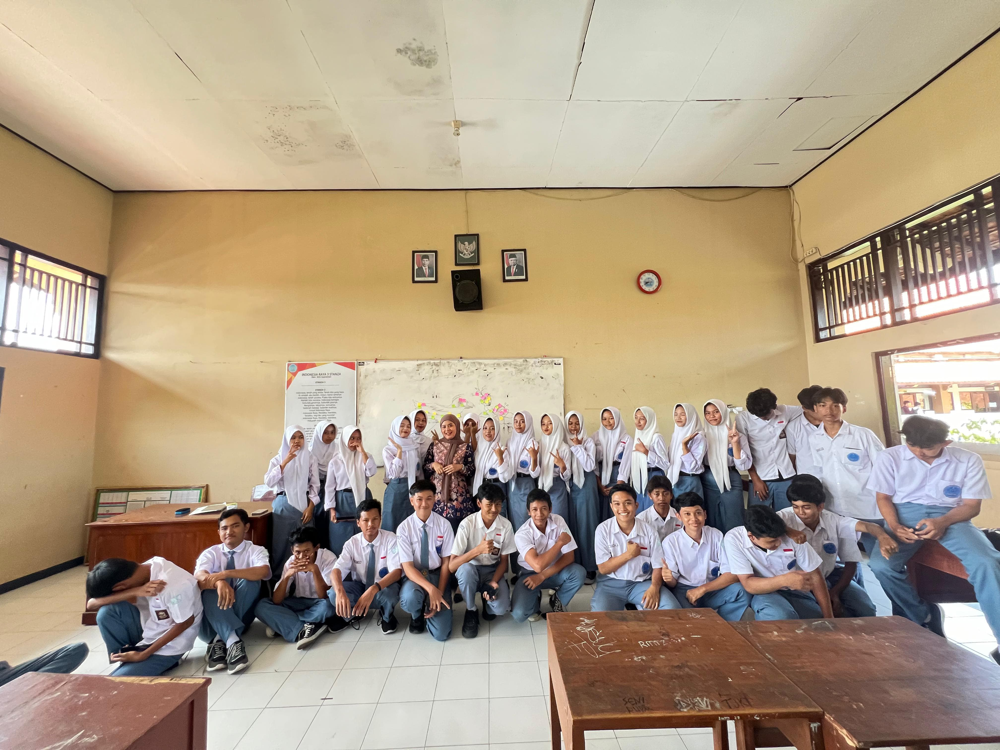
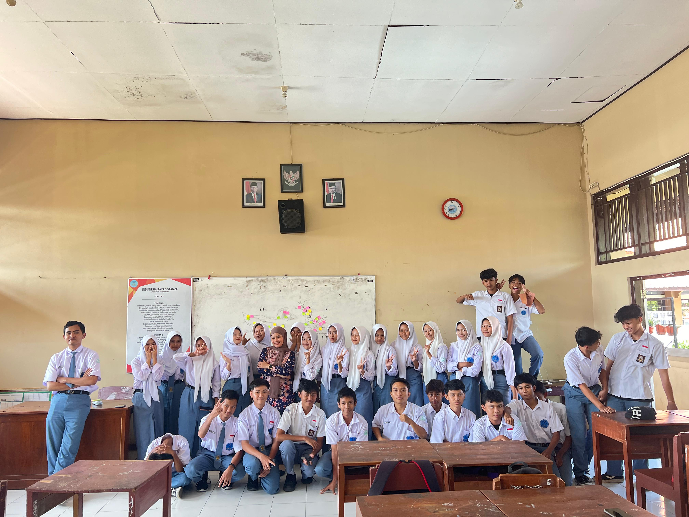
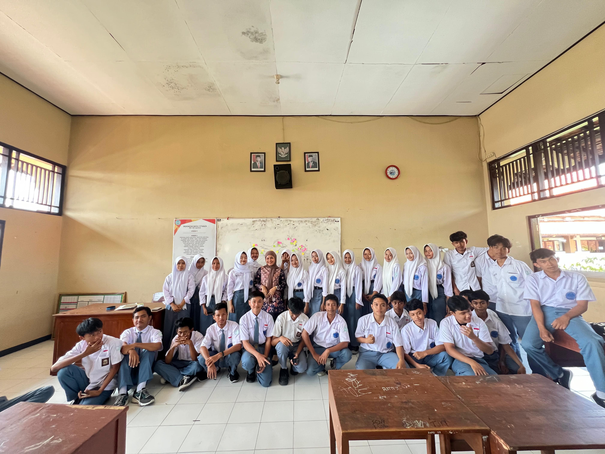
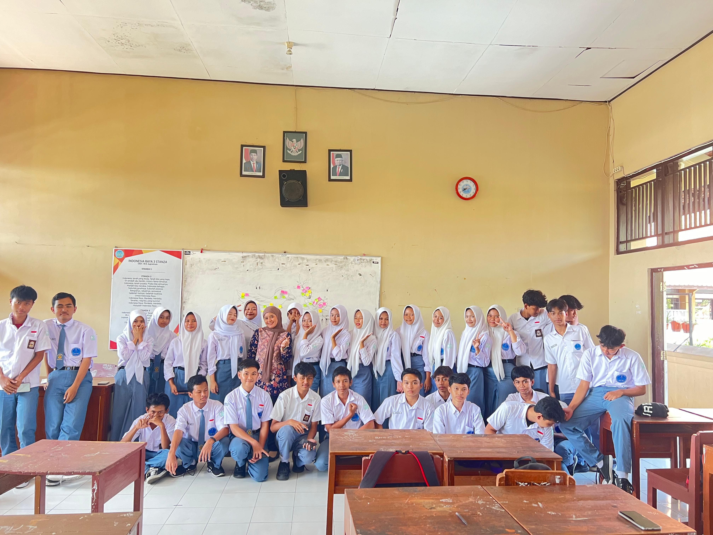
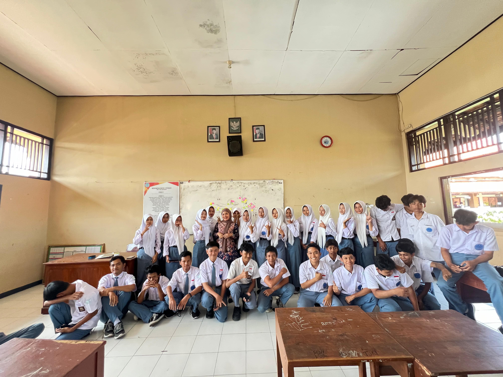

Jadwal X-TJKT-4
Jadwal Teori
Senin
SIN [Sejarah Indonesia]
BIG [Bahasa Inggris]
PAB [Pendidikan Agama]
Selasa
MAT [Matematika]
BJW [Bahasa Jawa]
BIN [Bahasa Indonesia]
Rabu
BIG [Bahasa Inggris]
MAT [Matematika]
SBU [Seni Budaya]
Kamis
PJOK [Pendidikan Jasmani, Olahraga, dan Kesehatan]
Jeda Kegiatan
BIN [Bahasa Indonesia]
PAB [Pendidikan Agama]
Jum'at
Jum'at Karakter
PJOK [Pendidikan Jasmani, Olahraga, dan Kesehatan]
PKN [Pendidikan Kewarga Negaraan]
Jadwal Praktek
Senin
PKR [Penguatan Karakter][Upacara]
DPK [Dasar Proggram Keahlian]
BKS [Bimbinagan Konseling]
DPK [Dasar Proggam Keahlian]
Selasa
PAS [IPA IPS]
P-5
DPK [Dasar Proggam Keahlian]
PAS [IPA IPS]
Rabu
DPK [Dasar Proggam Keahlian]
Kamis
DPK [Dasar Proggam Keahlian
P-5
INF [Informatika]]
Jum'at
Jum'at Karakter
INF [Informatika]
PAS [IPA IPS]
Jadwal Piket
Senin
Abyakta | Adhira | Ahmad | Syahrul | Raka | Taufiq | Albriano
Selasa
Bintang | Aqila | Ardiansyah | Arifah | Septian | Sofyan | Syahid
Rabu
Aulia Cintya | Aulia Rossi | Alvalen | Azizah | Revan | Ririn | Riska
Kamis
Bidhary | Denia | Dwi Handika | Pratama | Hasya | Puan | Putri
Jum'at
Herlambang | Ivo | Kelvin | Marvel | Fardan | Nova
Gallery Kelas
 







Sosial Media X-TJKT-4